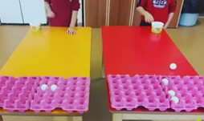

PERCEPCIÓN
Esta actividad, se trata de encestar bolas de ping pong en cajas de hueveras. De tal manera que,
utilizando una mesa u otra superficie alargada, en una parte se colocará el niño
o niña que tendrá que encestar las pelotas de ping pong en las hueveras que se situarán en la otra parte de la mesa.
Se trata de una gran herramienta para trabajar la coordinación ojo-mano y habilidades propioceptivas.
El entrenamiento del sistema propioceptivo para la mejora del equilibrio, puede conseguir
incluso la anticipación de las posibles alteraciones con el fin de que no se produzcan. Para la mejora del equilibrio,
se recomiendan aquellos que incluyan: Apoyos sobre una pierna, verticales, conos, oscilaciones y giros de las extremidades
superiores y tronco con apoyo sobre una pierna, mantenimiento de posturas o movimientos con apoyo limitado o sobre superficies
irregulares, ejercicios con los ojos cerrados (Ruiz, 2014). Además se recomienda cualquier material, que por sus características
físicas no esté firmemente unido al suelo, pudiendo rodar, deslizarse, vibrar o realizar cualquier otro tipo de movimiento que
genere situaciones en las que sea necesaria la intervención del equilibrio con el fin de mejorar la condición física.
VIDEO
RECOMENDACIONES
- Espacio: Se requiere un espacio donde se pueda colocar la mesa o la superficie y que
el niño/a pueda moverse ampliamente. Además de contar con la mínima cantidad de distracciones, ya sean sonoras, visuales, etc.
- Tiempo: Variable, según el tiempo que se disponga. Se pueden establecer una especie
de retos, según el nivel de dificultad que requiera la persona; por ejemplo: Intentar encestar 3 pelotas en 1 minuto. .
MATERIAL
- Hueveras.
- Pelota de ping pong o de papel de aluminio.
- Cinta adhesiva para que las hueveras se peguen a la mesa.